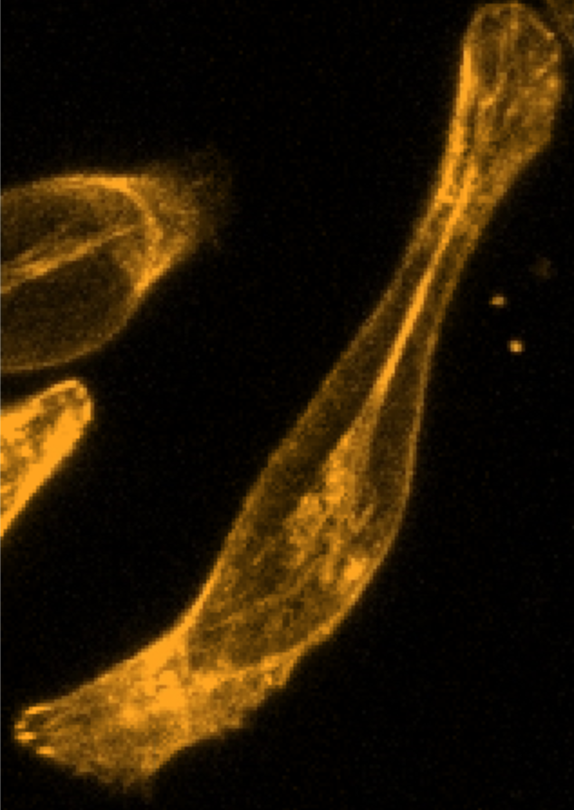
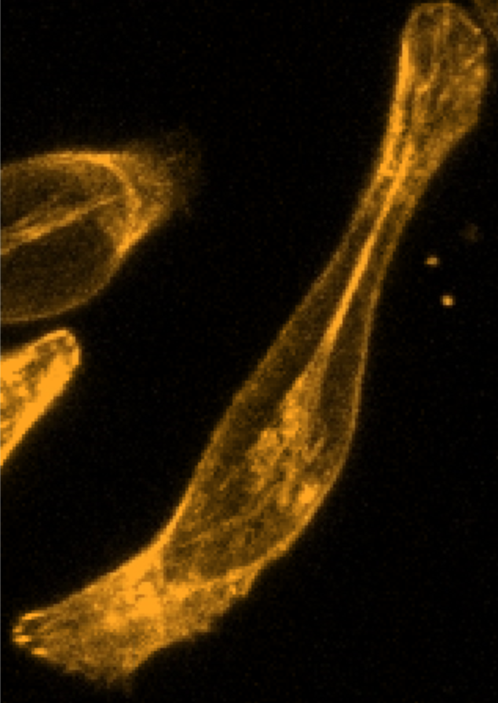

Involvements > Dr. Tang's Mechano-biology Lab > Actin Strands Detector with MATLAB
October 2022
This was the first algorithm I wrote as a member of the Mechanobiology lab. By using MATLAB's computer vision library, I was able to apply different edge detection filters like Sobel and Canny and incorporate a voting system to accurately detect actin strands in a cell.
By applying a Canny and Sobel edge detection filter over the image, I was able to compile a binary image that guided the edge detection algorithm.
Following the point voting system implemented, I was able to gather information on the length of each composite strand and their endpoints. This data was used to plot lines on the grayscaled image.
A csv file was gathered of all the strands detected by the software. This data was then used to create a final analysis of the full length of actin strands and their thickness.
xin.tang@ufl.edu
linkedin.com/in/miao-huang-796424113/
 
